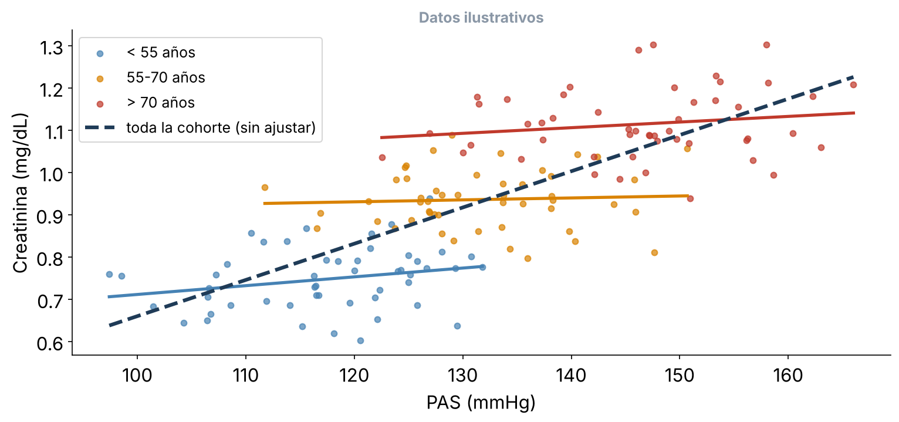
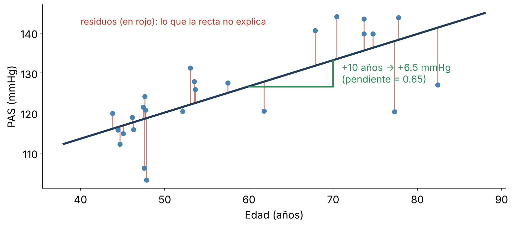
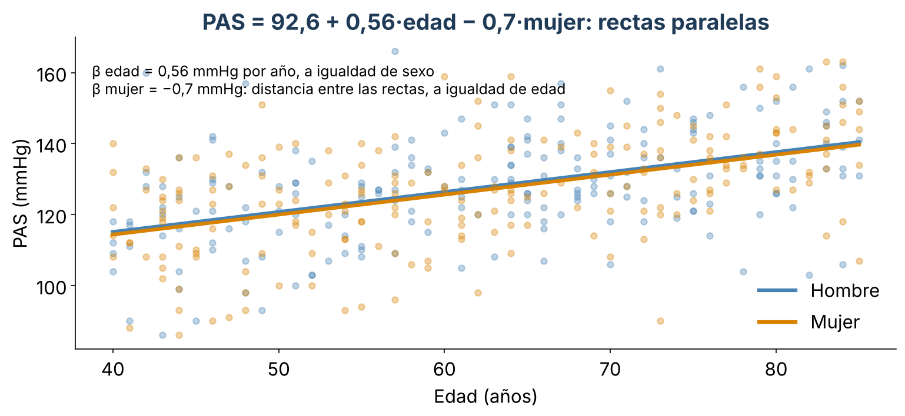
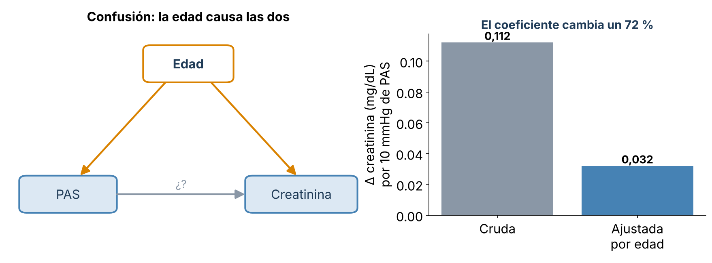
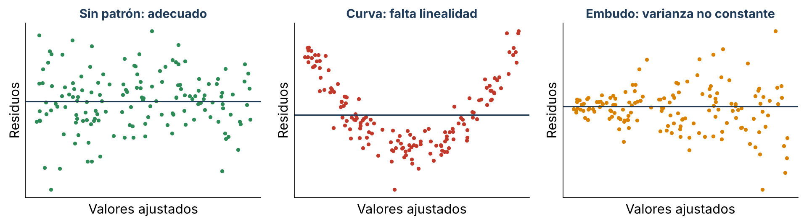
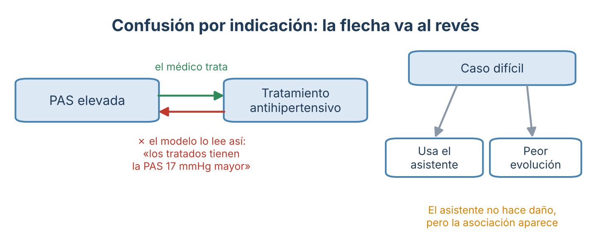

Bioestadística (1964) · Grado en Medicina · Curso 2027-2028
Tema 270Modelos de regresión lineal simple y múltiple
Módulo 5. Generalización de conclusiones
Evaluación: el examen del Módulo 5 se hace con Colab. Practica ejecutando e interpretando cada análisis.
Fernando Borrás Rocher · Universidad Miguel Hernández de Elche · CC BY 4.0
Objetivos de aprendizaje
Al terminar esta sesión serás capaz de:
- Ajustar un modelo de regresión lineal simple e interpretar su pendiente, su intervalo de confianza y su R².
- Ajustar un modelo de regresión lineal múltiple con variables cuantitativas y cualitativas, e interpretar cada coeficiente ajustado por las demás.
- Reconocer la confusión y usar la regresión múltiple para controlarla.
- Comprobar las condiciones del modelo con el análisis de los residuos.
- Reconocer los límites del ajuste estadístico: confusión residual y confusión por indicación.
Cómo usar esta presentación
Usa el selector de arriba para dar el tema en una sesión completa o en dos sesiones intercaladas.
🎓 Sesión de clase magistral
- 1. Caso clínico de partida 5 min
- 2. Conceptos clave 10 min
- 5. Autoevaluación 5 min
Explica los conceptos, haz la pausa activa y cierra con las ideas clave.
💻 Sesión de Colab
- 3. Demostración: de la recta al modelo múltiple 20 min
- 4. Práctica en la app Bioestadística 10 min
- 5. Autoevaluación 5 min
Cada estudiante abre su copia del cuaderno, predice el resultado y después ejecuta la celda.
Teclas: ← → para pasar · N notas del profesor · M cambiar de modo · F pantalla completa · Esc índice.
1. Caso clínico de partida
PAS y creatinina: ¿o es la edad?

- En toda la cohorte, más PAS se asocia con más creatinina.
- Dentro de cada grupo de edad, la relación casi desaparece: la edad confundía la asociación.
2. Conceptos clave
2.1 La regresión lineal simple
La recta de regresión

- Pendiente: cambio medio de Y por cada unidad de X.
- Mínimos cuadrados: la recta que hace mínima la suma de los residuos al cuadrado.
2. Conceptos clave
2.2 La regresión lineal múltiple

$$Y = \beta_0 + \beta_1 X_1 + \beta_2 X_2 + \dots + \beta_k X_k + \varepsilon$$
Cada coeficiente $\beta_j$ es el cambio medio de Y por unidad de $X_j$ manteniendo constantes las demás variables del modelo. Es un efecto ajustado.
Las variables cualitativas entran como variables indicadoras (0/1). Con sexo, el coeficiente de «Mujer» es la diferencia media entre mujeres y hombres (la categoría de referencia), a igualdad de las demás variables.
2. Conceptos clave
2.3 Confusión

Una variable es de confusión si está asociada a la exposición y al resultado, y no es un paso intermedio entre ambas. Distorsiona la asociación observada.
Edad
↙ ↘
PAS ···?··· Creatinina
Señal de confusión: el coeficiente de la exposición cambia mucho al añadir la variable al modelo (como orientación, más de un 10 %).
El ajuste solo controla las variables medidas e incluidas. Siempre puede quedar confusión residual por variables no medidas o mal medidas. Por eso los estudios observacionales, aun ajustados, no demuestran causalidad. El ensayo clínico aleatorizado sigue siendo la referencia: la aleatorización reparte por igual también los factores que no se han medido.
2. Conceptos clave
2.4 Condiciones del modelo
Mirar los residuos

- Una nube sin patrón: el modelo es adecuado.
- Una curva indica falta de linealidad; un embudo, varianza no constante.
Pausa activa
Piensa 30 segundos, comenta con quien tienes al lado y vota.
En el modelo PAS = 92 + 0,56 · edad, ¿qué significa 0,56?
En la sesión de Colab
Lo que acabas de ver se comprueba con datos en el cuaderno del Tema 270.
- Abre el cuaderno y guarda tu copia: Archivo → Guardar una copia en Drive.
- Ejecuta la celda de configuración.
- Ve a la demostración y predice cada resultado antes de ejecutar.
3. Demostración: de la recta al modelo múltiple
3.1 Regresión simple: PAS y edad
▶ En tu cuaderno: 3.1 Regresión simple: PAS y edad. Antes de ejecutar, escribe qué esperas obtener.
import numpy as np
import pandas as pd
import matplotlib.pyplot as plt
import statsmodels.formula.api as smf
cohorte = pd.read_csv("https://raw.githubusercontent.com/fborrasumh/bioestadistica/main/datos/cohorte_limpia.csv")
simple = smf.ols("pas_mmHg ~ edad", data=cohorte).fit()
b0, b1 = simple.params
li, ls = simple.conf_int().loc["edad"]
print(f"PAS = {b0:.1f} + {b1:.3f} · edad")
print(f"Pendiente: {b1:.3f} mmHg por año (IC 95 %: {li:.3f} a {ls:.3f}), p = {simple.pvalues['edad']:.1e}")
print(f"Por cada 10 años: {10 * b1:.1f} mmHg más")
print(f"R² = {simple.rsquared:.3f} · n = {int(simple.nobs)}")x = np.linspace(cohorte["edad"].min(), cohorte["edad"].max(), 100)
prediccion = simple.get_prediction(pd.DataFrame({"edad": x})).summary_frame(alpha=0.05)
plt.figure(figsize=(7, 4.5))
plt.scatter(cohorte["edad"], cohorte["pas_mmHg"], alpha=0.35, s=15)
plt.plot(x, prediccion["mean"], color="firebrick", label="Recta ajustada")
plt.fill_between(x, prediccion["mean_ci_lower"], prediccion["mean_ci_upper"], color="firebrick", alpha=0.25,
label="IC 95 % de la media")
plt.fill_between(x, prediccion["obs_ci_lower"], prediccion["obs_ci_upper"], color="gray", alpha=0.12,
label="Intervalo de predicción 95 % (pacientes)")
plt.xlabel("Edad (años)")
plt.ylabel("PAS (mmHg)")
plt.legend()
plt.show()Hay dos bandas distintas. El IC de la media (estrecho) dice dónde está la PAS media de los pacientes de cada edad. El intervalo de predicción (ancho) dice dónde estará la PAS de un paciente concreto. La edad explica alrededor de una cuarta parte de la variabilidad de la PAS. Es un predictor importante, pero con la edad de un paciente no se puede adivinar su presión.
3. Demostración: de la recta al modelo múltiple
3.2 Regresión múltiple: PAS, edad, IMC, sexo y diabetes
▶ En tu cuaderno: 3.2 Regresión múltiple: PAS, edad, IMC, sexo y diabetes. Antes de ejecutar, escribe qué esperas obtener.
multiple = smf.ols("pas_mmHg ~ edad + imc + sexo + diabetes", data=cohorte).fit()
tabla = pd.DataFrame({
"Coeficiente": multiple.params,
"IC 95 % inf.": multiple.conf_int()[0],
"IC 95 % sup.": multiple.conf_int()[1],
"p": multiple.pvalues,
}).round(3)
print(f"n = {int(multiple.nobs)} · R² = {multiple.rsquared:.3f} · R² ajustado = {multiple.rsquared_adj:.3f}")
tablaInterpretación de los coeficientes:
- Edad: a igualdad de IMC, sexo y diabetes, cada año más se asocia con una PAS media unos 0,55 mmHg mayor.
- IMC: a igualdad de edad, sexo y diabetes, cada kg/m² más se asocia con unos 0,85 mmHg más de PAS. Son unos 4 mmHg por cada 5 kg/m².
- Sexo y diabetes: sus IC incluyen el 0; con estos datos no hay evidencia de diferencias de PAS a igualdad de las demás variables.
Fíjate en que el modelo se ajusta con 380 pacientes, no con 400: los que tienen algún dato perdido se excluyen. Siempre hay que indicar el n del modelo.
3. Demostración: de la recta al modelo múltiple
3.3 Confusión: PAS y creatinina
▶ En tu cuaderno: 3.3 Confusión: PAS y creatinina. Antes de ejecutar, escribe qué esperas obtener.
analiticas = pd.read_csv("https://raw.githubusercontent.com/fborrasumh/bioestadistica/main/datos/analiticas.csv")
renal = cohorte.merge(analiticas, on="id").dropna(subset=["creatinina_mg_dl"])
cruda = smf.ols("creatinina_mg_dl ~ pas_mmHg", data=renal).fit()
ajustada = smf.ols("creatinina_mg_dl ~ pas_mmHg + edad", data=renal).fit()
for nombre, m in [("Sin ajustar", cruda), ("Ajustado por edad", ajustada)]:
b = m.params["pas_mmHg"] * 10
li, ls = m.conf_int().loc["pas_mmHg"] * 10
print(f"{nombre:>18}: {b:.3f} mg/dL por cada 10 mmHg (IC 95 %: {li:.3f} a {ls:.3f}), p = {m.pvalues['pas_mmHg']:.3f}")
cambio = 1 - ajustada.params["pas_mmHg"] / cruda.params["pas_mmHg"]
print(f"El coeficiente de la PAS se reduce un {cambio:.0%} al ajustar por edad")Al comparar pacientes de la misma edad, la asociación entre PAS y creatinina baja más de dos tercios y deja de ser significativa. Buena parte de la asociación cruda se debía a la edad: los pacientes mayores tienen a la vez la PAS y la creatinina más altas. En esta cohorte, la asociación ajustada es pequeña. Esto no demuestra que la hipertensión no dañe el riñón (lo hace, a largo plazo). Demuestra que la asociación cruda no servía como prueba.
3. Demostración: de la recta al modelo múltiple
3.4 Diagnóstico del modelo: los residuos
▶ En tu cuaderno: 3.4 Diagnóstico del modelo: los residuos. Antes de ejecutar, escribe qué esperas obtener.
import scipy.stats as stats
fig, ejes = plt.subplots(1, 2, figsize=(10, 4))
ejes[0].scatter(multiple.fittedvalues, multiple.resid, alpha=0.4, s=15)
ejes[0].axhline(0, color="black", linestyle="--")
ejes[0].set_xlabel("PAS ajustada por el modelo (mmHg)")
ejes[0].set_ylabel("Residuo (mmHg)")
ejes[0].set_title("Residuos frente a ajustados")
stats.probplot(multiple.resid, plot=ejes[1])
ejes[1].set_title("Gráfico Q-Q de los residuos")
plt.tight_layout()
plt.show()Los residuos se reparten de forma homogénea alrededor de 0, sin curvas ni forma de embudo. Además, siguen aproximadamente la recta del gráfico Q-Q: el modelo lineal es adecuado.
3. Demostración: de la recta al modelo múltiple
3.5 Una trampa: la confusión por indicación
▶ En tu cuaderno: 3.5 Una trampa: la confusión por indicación. Antes de ejecutar, escribe qué esperas obtener.

indicacion = smf.ols("pas_mmHg ~ edad + imc + hta_tratada", data=cohorte).fit()
b = indicacion.params["hta_tratada[T.Sí]"]
li, ls = indicacion.conf_int().loc["hta_tratada[T.Sí]"]
print(f"Coeficiente del tratamiento antihipertensivo: {b:+.1f} mmHg (IC 95 %: {li:.1f} a {ls:.1f})")El modelo dice que los pacientes tratados tienen una PAS unos 17 mmHg mayor. ¿Los antihipertensivos suben la presión? No: se trata a los que tienen la presión alta. El tratamiento es una consecuencia de la PAS elevada, no su causa. Es la confusión por indicación, el sesgo más frecuente al evaluar tratamientos con datos observacionales. Por eso la eficacia de un fármaco se demuestra con ensayos aleatorizados.
Lo mismo ocurre al evaluar herramientas de IA con datos de la historia clínica. Si los médicos usan más el asistente en los casos difíciles, los casos con asistente evolucionan peor. Y eso ocurre aunque el asistente no haga daño.
Ampliación
Ampliación: predecir con el modelo
pacientes = pd.DataFrame({"edad": [45, 70], "imc": [24, 33], "sexo": ["Mujer", "Hombre"], "diabetes": ["No", "Sí"]})
pred = multiple.get_prediction(pacientes).summary_frame(alpha=0.05)
for i, fila in pacientes.iterrows():
print(f"{fila['sexo']} de {fila['edad']} años, IMC {fila['imc']}, diabetes {fila['diabetes']}: "
f"PAS esperada {pred.loc[i, 'mean']:.0f} mmHg (intervalo de predicción 95 %: "
f"{pred.loc[i, 'obs_ci_lower']:.0f} a {pred.loc[i, 'obs_ci_upper']:.0f})")Los modelos predictivos se tratan en el Tema 290. Ya se ve aquí su límite: aunque el modelo estime bien la media, un paciente individual puede estar muy lejos de ella.
Ampliación
Ampliación: errores frecuentes
Interpretar un coeficiente ajustado como causal.
Ajustar por una variable intermedia del camino causal. Por ejemplo, ajustar por la PAS el efecto de la obesidad sobre los eventos. Así se elimina parte del efecto que se quiere medir.
Extrapolar fuera del rango de los datos. La ordenada en el origen (edad 0) no tiene sentido.
Confundir el IC de la media con el intervalo de predicción.
Incluir demasiadas variables para el tamaño muestral. Como orientación, al menos 10 a 20 observaciones por predictor.
Seleccionar las variables por su valor p. Elígelas por conocimiento clínico, antes de ver los datos.
Ampliación
Ampliación: Comparar y elegir modelos
Un modelo anidado es el mismo modelo con menos variables. Hay tres formas de compararlo con el modelo completo:
| Criterio | Qué mide | Cómo se lee |
|---|---|---|
| Prueba F parcial | si las variables quitadas aportan algo | p < 0,05: el modelo completo es mejor |
| R² ajustado | variabilidad explicada, penalizando cada variable | mayor es mejor |
| AIC | ajuste penalizado por complejidad | menor es mejor |
Los dos modelos se deben ajustar con los mismos pacientes. Por eso, quita antes los valores perdidos de todas las variables.
En tus materiales SIMUSTAT: Tema 440. Modelos de regresión lineal múltiple, apartado 4.
from statsmodels.stats.anova import anova_lm
variables = ["pas_mmHg", "edad", "imc", "sexo", "diabetes"]
mismos = cohorte.dropna(subset=variables)
completo = smf.ols("pas_mmHg ~ edad + imc + sexo + diabetes", data=mismos).fit()
anidado = smf.ols("pas_mmHg ~ edad + imc + sexo", data=mismos).fit()
print(anova_lm(anidado, completo).round(3))
for nombre, m in [("Anidado (sin diabetes)", anidado), ("Completo", completo)]:
print(f"{nombre:24} R² ajustado = {m.rsquared_adj:.3f} AIC = {m.aic:.1f}")Si la prueba F no es significativa y el AIC apenas cambia, el modelo más sencillo es suficiente. Pero la elección final es también clínica. Una variable de confusión conocida se mantiene en el modelo, aunque no sea significativa (Tema 280).
4. Práctica en la app Bioestadística
Abre la unidad 270 de la app Bioestadística y completa sus misiones:
- Misión básica (sin asistente): interpretar los coeficientes de cuatro modelos publicados y decidir cuáles son ajustados.
- Misión clínica (con pistas): estimar la asociación entre el IMC y el HDL, crudo y ajustado por sexo, y decidir si hay confusión.
- Misión reto (con asistente): pedir al asistente un modelo para «el efecto del tratamiento antihipertensivo» con los datos de la cohorte. Detectar la confusión por indicación y redactar por qué el resultado no es válido.
Al terminar, exporta el informe de la unidad.
5. Autoevaluación
Responde sin asistente.
5. Autoevaluación
Elige una opción: verás la explicación.
En el modelo PAS = 92 + 0,56 · edad, ¿qué significa 0,56?
En un modelo múltiple, el coeficiente del IMC es 0,85 mmHg por kg/m². ¿Cómo se interpreta?
Al añadir la edad al modelo, el coeficiente de la PAS sobre la creatinina pasa de 0,11 a 0,03. ¿Qué indica?
Los pacientes que reciben estatinas tienen más eventos cardiovasculares que los que no las reciben, incluso ajustando por edad. ¿Cuál es la explicación más probable?
¿Qué intervalo usas para decir entre qué valores estará la PAS de un paciente concreto según el modelo?
Ideas clave
- La pendiente es el cambio medio de Y por unidad de X; R², la proporción de variabilidad explicada.
- En la regresión múltiple, cada coeficiente está ajustado por las demás variables del modelo.
- La confusión se detecta cuando el coeficiente cambia mucho al ajustar.
- El ajuste no elimina la confusión residual ni la confusión por indicación.
- Comprueba los residuos e indica siempre el n del modelo.
Glosario
| Término | Definición |
|---|---|
| Regresión lineal simple | Modelo que relaciona una variable cuantitativa con un predictor mediante una recta |
| Pendiente (β₁) | Cambio medio de la respuesta por unidad del predictor |
| Mínimos cuadrados | Método que estima los coeficientes minimizando la suma de los residuos al cuadrado |
| Residuo | Diferencia entre el valor observado y el valor ajustado por el modelo |
| R² | Proporción de la variabilidad de la respuesta explicada por el modelo |
| Regresión lineal múltiple | Modelo con varios predictores, cuyos coeficientes están ajustados entre sí |
| Variable indicadora | Variable 0/1 que representa una categoría de una variable cualitativa |
| Confusión | Distorsión de una asociación por una tercera variable asociada a la exposición y al resultado |
| Confusión residual | Confusión que persiste tras el ajuste, por variables no medidas o mal medidas |
| Confusión por indicación | Confusión debida a que el tratamiento se indica según el pronóstico del paciente |
| Intervalo de predicción | Intervalo para el valor de un individuo nuevo |
Para saber más
- Schneider A, Hommel G, Blettner M. Linear regression analysis: part 14 of a series on evaluation of scientific publications. Dtsch Arztebl Int. 2010;107(44):776-782. doi:10.3238/arztebl.2010.0776
- Kyriacou DN, Lewis RJ. Confounding by indication in clinical research. JAMA. 2016;316(17):1818-1819. doi:10.1001/jama.2016.16435
- Hernán MA, Robins JM. Causal Inference: What If. Boca Ratón: Chapman & Hall/CRC; 2020. Disponible gratis en: miguelhernan.org/whatifbook.
- SIMUSTAT Unidigital UMH. Tema 440. Modelos de regresión lineal múltiple. Cuaderno de Google Colab. Elche: Universidad Miguel Hernández; 2023.